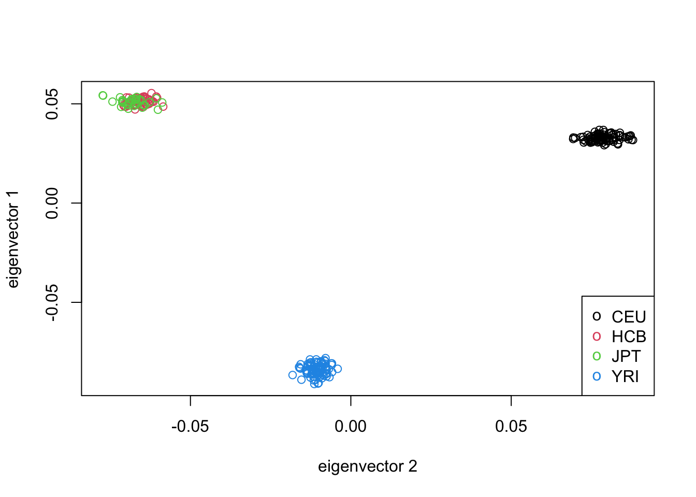
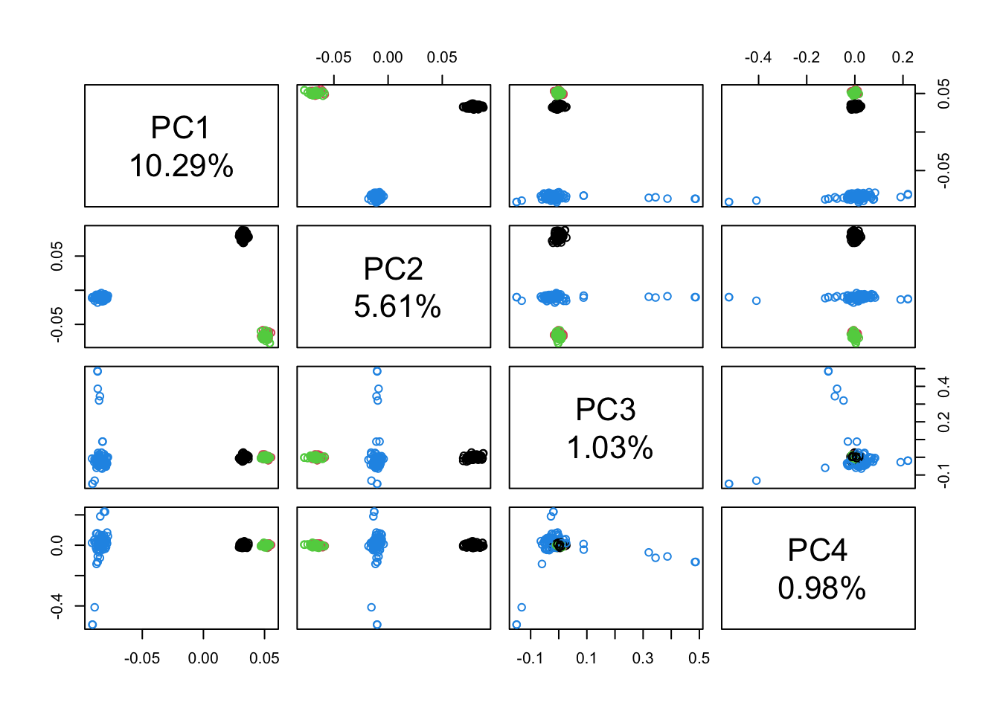
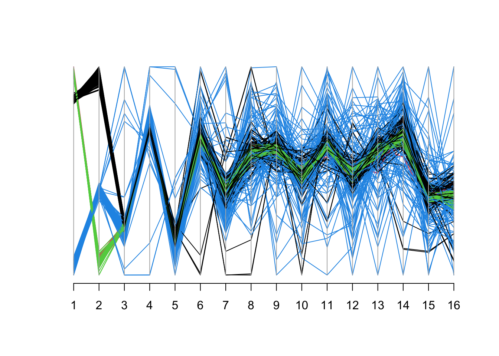
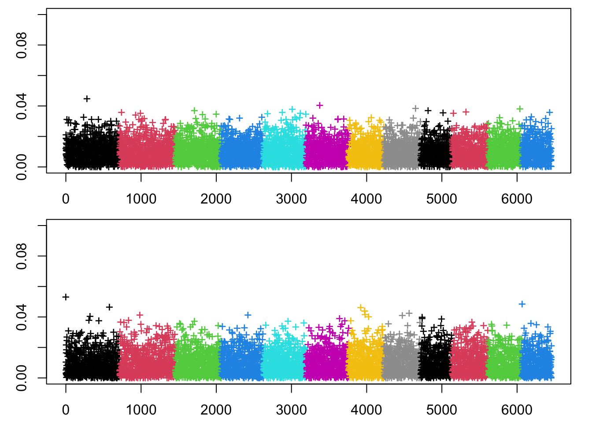
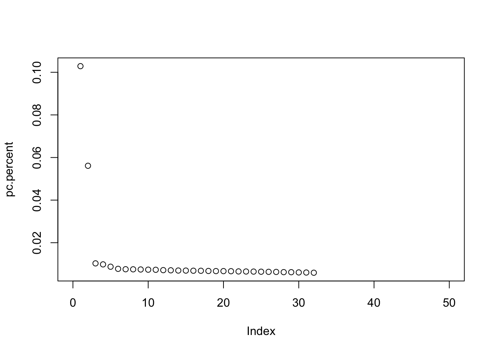

library(tidyverse)
library(broom)
library(dplyr)
library(tidyr)
library(GGally)
library(gridExtra)Principal Component Analysis
Principal Component Analysis in Genetics
What is PCA?
Principal Component Analysis (PCA) is a statistical method used to simplify complex data by reducing its dimensions while preserving as much variation as possible. It creates new variables, called principal components, that capture patterns in the data. These components are ranked, with the first principal component (PC) representing the most variation.
PCA is especially useful for genetic data, where it helps researchers account for confounding variables, like population structure, in genetic studies. By controlling for these variations, PCA improves the accuracy of analyses and results.
In this tutorial, we will first walk through an example showing how application of PCA can improve accuracy of results in a simulated Genome Wide Association Study. Next, there will be an example of applying PCA to real genetic data and code demonstrating common useful visualizations in statistical genetics.
Set Up
Exploring the data
This is data downloaded from Professor Macalester College’s statgen GitHub page that offers many statistical data sets. It contains simulated genetic data of 1,000 individuals and 15 SNPs. Run the following chunks of code to download the data and examine its dimensions and minor allele frequencies.
pcadata <- read_csv('https://mac-stat.github.io/statgen/data/pca_toy_data.csv')dim(pcadata)[1] 1000 17colnames(pcadata) [1] "population" "trait" "SNP1" "SNP2" "SNP3"
[6] "SNP4" "SNP5" "SNP6" "SNP7" "SNP8"
[11] "SNP9" "SNP10" "SNP11" "SNP12" "SNP13"
[16] "SNP14" "SNP15" pcadata %>%
group_by(population) %>%
count()# A tibble: 2 × 2
# Groups: population [2]
population n
<dbl> <int>
1 1 500
2 2 500Minor Allele Frequency (MAF) is the proportion of the less common allele of a genetic variant in a given population. It ranges from 0 to 1, where 0.5 means both alleles are equally common. MAF is important in genetics because it helps identify common and rare variants, which can influence traits, diseases, and population structure. MAF can be used to ensure analyses focus on variants with meaningful frequency differences across populations. Here are the minor allele frequencies for each SNP across the two populations in the study:
pcadata %>%
group_by(population) %>%
summarise(across(starts_with("SNP"), mean, na.rm = TRUE)/2)# A tibble: 2 × 16
population SNP1 SNP2 SNP3 SNP4 SNP5 SNP6 SNP7 SNP8 SNP9 SNP10 SNP11
<dbl> <dbl> <dbl> <dbl> <dbl> <dbl> <dbl> <dbl> <dbl> <dbl> <dbl> <dbl>
1 1 0 0 0.298 0.291 0.293 0.102 0.107 0.094 0.095 0.097 0.107
2 2 1 1 0.512 0.506 0.504 0.11 0.085 0.097 0.092 0.111 0.096
# ℹ 4 more variables: SNP12 <dbl>, SNP13 <dbl>, SNP14 <dbl>, SNP15 <dbl>Some things to notice:
- SNP 1 and SNP 2 only occur in population 2
- SNPs 1 - 5 are distinctly more common in population 2 than 1
- SNPs 6 - 15 have relatively the same allele frequency in both populations
Next, we will run a PCA on this data to see if it can help us reduce confounding!
Run PCA
Run the code chunks in order to complete Principal Component Analysis and to reduce the dimensions of the data!
# Remove unnecessary columns
geno <- pcadata %>%
select(-trait, -population)
# use prcomp function to perform PCA
pca_out <- prcomp(geno, center = TRUE, scale = TRUE)In PCA, scores and loadings help interpret the transformation of data into principal components.
PCA Scores are the transformed coordinates of the original data in the new principal component space. Each data point gets a score for each principal component, showing how much it contributes to that PC.
PCA Loadings indicate how much each original variable contributes to a principal component. They show the relationship between the original variables and the new components, helping interpret what each principal component represents. High loadings suggest strong influence on a particular PC.
# Extract scores and loadings
pca_loadings <- pca_out$rotation
pca_scores <- pca_out$xHere is a visualization of the scores of the first two PC’s in the PCA:
pca_scores_pop <- pcadata %>% select(population) %>% bind_cols(pca_scores)
pca_scores_pop %>%
ggplot() +
geom_point(aes(x = PC1, y = PC2, color = as.factor(population)))
As you can see, PCA has distinctly clustered the two populations. There is more variation in the populations across the first PC, as expected, while in the second PC, the scores spread across the same values.
Next, we will plot the loadings of the first PC:
pca_loadings <- pca_loadings %>%
as.data.frame() %>%
mutate(SNP = row_number())
pca_loadings %>%
select(PC1, SNP) %>% # select another PC to visualize its loadings
ggplot(aes(x = as.factor(SNP), y = PC1, fill = SNP)) +
geom_bar(stat = "identity") +
labs(y = "loadings", x = "SNP", fill = "original features")
This loadings plot shows that the first two SNPs contribute the most positively to explaining the variation in the first PC. This is intiutive because the minor allele in the first two SNPs only occurrs in population 2, making occurrence of a minor allele in SNP 1 or 2 an easy way to classify the populaitons.
However, correlated SNPs are SNPs that show statistical association with each other, meaning their allele frequencies tend to change together in a population. This correlation often arises due to linkage disequilibrium (LD), where nearby genetic variants are inherited together rather than assorting independently. It is likely that SNPs 1 and 2 may be correlated since they can only be passed through inheritance in the second population. Keep this in mind for later.
Finally, we will extract the variance of each PC and calculate the proportion of variance explained by that PC. We will use this to create a visualization that shows the variance explained by each PC which will help us decide how many PCs are important to include in our analysis to reduce confounding.
# extract variance of each PC
pca_var <- (pca_out$sdev)^2
# calculate proportion of variance explained
total_var <- sum(pca_var)
pve <- pca_var/total_var
pca_out$pve <- c(pve)# visualize
pca_out %>%
tidy(matrix = "eigenvalues") %>%
ggplot(aes(y = pve, x = PC)) +
geom_point(size = 2) +
geom_line() +
labs(y = "% of variance explained")
Conduct a Genome Wide Association Study
Next, we will conduct a GWAS to allow us to see SNP results with and without PCA adjustment.
Run the code below for the GWAS without PCA:
pvals <- c()
genot <- pcadata %>%
select(-population)
# loop through each of the 15 SNPs
for(i in 2:16){
mod <- lm(trait ~ genot[[i]], data = genot) # fit model looking at SNP i
pvals[i] <- tidy(mod)$p.value[2] # record p-value
}
pvals %>%
as.data.frame() .
1 NA
2 4.653548e-68
3 4.653548e-68
4 7.254369e-111
5 7.235763e-05
6 9.853343e-09
7 9.037029e-01
8 8.994217e-01
9 4.700928e-02
10 5.649656e-01
11 1.973304e-01
12 5.209405e-02
13 7.764542e-01
14 2.830780e-01
15 8.623279e-01
16 8.516383e-01mod <- lm(trait ~ genot[[2]], data = genot) # fit model looking at SNP i
pvals[i] <- tidy(mod)$p.value[2] # record p-valueThese results show that p-values for the first 3 SNPs are incredibly significant, the 4th and 5th SNPs are somewhat significant, and the rest of the SNPs are relatively insignificant in comparison. This follows what we should expect to see since we originally noted the same patterns in these SNPs minor allele frequencies across populations. But, are we sure that the first two SNPs are uncorrelated predictors?
Now, for comparison, run the code for a GWAS that adjusts with PCA:
pvals2 <- c()
pca_scores1 <- pca_scores %>%
as.data.frame() %>%
select(PC1)
genotpc1 <- pcadata %>%
select(-population) %>%
cbind(pca_scores1)
# loop through each of the 15 SNPs
for(i in 2:16){
mod2 <- lm(trait ~ genotpc1[[i]] + PC1, data = genotpc1) # fit model looking at SNP i
pvals2[i] <- tidy(mod2)$p.value[2] # record p-value
}
pvals2 %>%
as.data.frame() .
1 NA
2 1.196408e-03
3 1.196408e-03
4 5.533146e-65
5 1.294894e-09
6 1.269065e-04
7 8.029461e-01
8 6.302838e-02
9 1.018708e-02
10 7.965256e-01
11 6.224918e-01
12 1.310520e-01
13 5.731192e-01
14 6.297892e-01
15 9.357140e-01
16 3.236471e-02Now, the p-values are much more consistent which suggests that the correlation between some of the SNPs has been removed. The integration of the first PC removes these known contributions of SNPs 1 and 2 to provide uncorrelated results. This data was simulated such that the trait of interest depends on SNP 3 and population. The implementation of PCA produces more accurate GWAS results that show SNP 3 as very significant and uncorrelated, which is what we expect to see in this simulation.
Confounding
While PCA helps account for correlated SNPs, scientists need to consider confounding. Suppose \(Y\) is our outcome variable and \(X\) is our predictor of interest. A third variable, \(Z\), confounds the relationship between \(X\) and \(Y\) if it is a common cause of both the outcome variable \(Y\) and predictor of interest \(X\).
In the context of this analysis, population membership is a common cause of both possessing the trait of interest and possessing the minor alleles. This occurs because inheritance and ancestry in this population cause the trait to be more common, and expression of the trait is also causally associated with this inheritance.
Application to real genetic data
To begin the application of PCA to real genetic data, install the SNPRelate package that allows us to implement PCA much more efficiently.
if (!require("BiocManager", quietly = TRUE))
install.packages("BiocManager")
BiocManager::install("SNPRelate")
library(SNPRelate)The SNPRelate package provides some real example genetic data, we will save it as a genotype file here:
genofile <- snpgdsOpen(snpgdsExampleFileName())
genofileFile: /Library/Frameworks/R.framework/Versions/4.4-arm64/Resources/library/SNPRelate/extdata/hapmap_geno.gds (709.6K)
+ [ ] *
|--+ sample.id { VStr8 279 ZIP(29.9%), 679B }
|--+ snp.id { Int32 9088 ZIP(34.8%), 12.3K }
|--+ snp.rs.id { VStr8 9088 ZIP(40.1%), 36.2K }
|--+ snp.position { Int32 9088 ZIP(94.7%), 33.6K }
|--+ snp.chromosome { UInt8 9088 ZIP(0.94%), 85B } *
|--+ snp.allele { VStr8 9088 ZIP(11.3%), 4.0K }
|--+ genotype { Bit2 279x9088, 619.0K } *
\--+ sample.annot [ data.frame ] *
|--+ family.id { VStr8 279 ZIP(34.4%), 514B }
|--+ father.id { VStr8 279 ZIP(31.5%), 220B }
|--+ mother.id { VStr8 279 ZIP(30.9%), 214B }
|--+ sex { VStr8 279 ZIP(17.0%), 95B }
\--+ pop.group { VStr8 279 ZIP(6.18%), 69B }This example file contains 279 individuals that have been assessed across 9,088 SNPs. There are several populations represented in this study, let’s examine this below:
pop_code <- read.gdsn(index.gdsn(genofile, path="sample.annot/pop.group"))
table(pop_code)pop_code
CEU HCB JPT YRI
92 47 47 93 Here are the unabbreviated population groups:
- CEU: Central European
- HCB: Chinese
- JPT: Japanese
- YRI: West African
Next, we will use the snpgdsLDpruning function from SNPRelate to perform a pre-processing step known as “LD pruning”. This function calculates the correlation, or linkage disequilibrium, between SNPs and removes one of the two SNPs from every pair of highly correlated SNPs to produce an uncorrelated data set.
This function takes in a genotype file and a linkage disequilibrium threshold to determine which SNPs should be removed. It uses randomness to select positions along the chromosomes and assesses the linkage between the neighboring SNPs, and for this reason it is necessary to use the set.seed() function to proceed with continuous and replicable results.
set.seed(494)
snpset <- snpgdsLDpruning(genofile, ld.threshold=0.2)SNP pruning based on LD:
Excluding 365 SNPs on non-autosomes
Excluding 139 SNPs (monomorphic: TRUE, MAF: 0.005, missing rate: 0.05)
# of samples: 279
# of SNPs: 8,584
using 1 thread
sliding window: 500,000 basepairs, Inf SNPs
|LD| threshold: 0.2
method: composite
Chrom 1: |====================|====================|
74.16%, 531 / 716 (Sun Mar 30 19:37:47 2025)
Chrom 2: |====================|====================|
72.24%, 536 / 742 (Sun Mar 30 19:37:47 2025)
Chrom 3: |====================|====================|
73.73%, 449 / 609 (Sun Mar 30 19:37:47 2025)
Chrom 4: |====================|====================|
72.60%, 408 / 562 (Sun Mar 30 19:37:47 2025)
Chrom 5: |====================|====================|
75.62%, 428 / 566 (Sun Mar 30 19:37:47 2025)
Chrom 6: |====================|====================|
73.81%, 417 / 565 (Sun Mar 30 19:37:47 2025)
Chrom 7: |====================|====================|
75.42%, 356 / 472 (Sun Mar 30 19:37:47 2025)
Chrom 8: |====================|====================|
69.88%, 341 / 488 (Sun Mar 30 19:37:47 2025)
Chrom 9: |====================|====================|
76.44%, 318 / 416 (Sun Mar 30 19:37:47 2025)
Chrom 10: |====================|====================|
73.29%, 354 / 483 (Sun Mar 30 19:37:47 2025)
Chrom 11: |====================|====================|
75.84%, 339 / 447 (Sun Mar 30 19:37:47 2025)
Chrom 12: |====================|====================|
74.71%, 319 / 427 (Sun Mar 30 19:37:47 2025)
Chrom 13: |====================|====================|
75.87%, 261 / 344 (Sun Mar 30 19:37:47 2025)
Chrom 14: |====================|====================|
76.24%, 215 / 282 (Sun Mar 30 19:37:47 2025)
Chrom 15: |====================|====================|
75.57%, 198 / 262 (Sun Mar 30 19:37:47 2025)
Chrom 16: |====================|====================|
71.58%, 199 / 278 (Sun Mar 30 19:37:47 2025)
Chrom 17: |====================|====================|
73.43%, 152 / 207 (Sun Mar 30 19:37:47 2025)
Chrom 18: |====================|====================|
72.93%, 194 / 266 (Sun Mar 30 19:37:47 2025)
Chrom 19: |====================|====================|
82.50%, 99 / 120 (Sun Mar 30 19:37:47 2025)
Chrom 20: |====================|====================|
70.74%, 162 / 229 (Sun Mar 30 19:37:47 2025)
Chrom 21: |====================|====================|
75.40%, 95 / 126 (Sun Mar 30 19:37:47 2025)
Chrom 22: |====================|====================|
74.14%, 86 / 116 (Sun Mar 30 19:37:47 2025)
6,457 markers are selected in total.Before LD pruning, the data set contained 9,088 SNPs, and now, it now contains 6,460 uncorrelated SNPs. Now, we will perform a PCA on this data to reinforce use of uncorrelated data.
snpset.id <- unlist(unname(snpset))
head(snpset.id)[1] 1 2 4 5 7 10pca <- snpgdsPCA(genofile, snp.id=snpset.id, num.thread=2)Principal Component Analysis (PCA) on genotypes:
Excluding 2,631 SNPs (non-autosomes or non-selection)
Excluding 0 SNP (monomorphic: TRUE, MAF: NaN, missing rate: NaN)
# of samples: 279
# of SNPs: 6,457
using 2 threads
# of principal components: 32
PCA: the sum of all selected genotypes (0,1,2) = 1808200
CPU capabilities:
Sun Mar 30 19:37:47 2025 (internal increment: 1760)
[..................................................] 0%, ETC: ---
[==================================================] 100%, completed, 0s
Sun Mar 30 19:37:47 2025 Begin (eigenvalues and eigenvectors)
Sun Mar 30 19:37:47 2025 Done.pc.percent <- pca$varprop*100
head(round(pc.percent, 2))[1] 10.29 5.61 1.03 0.98 0.87 0.77tab <- data.frame(sample.id = pca$sample.id,
EV1 = pca$eigenvect[,1], # the first eigenvector
EV2 = pca$eigenvect[,2], # the second eigenvector
stringsAsFactors = FALSE)Selecting PCs
In the simulated data example above, we focused on the first two principal components (PCs), as they captured the most variation in the dataset. The number of PCs to include in an analysis is not fixed and depends on the scientist’s interpretation. While incorporating more PCs can help explain additional variation, doing so eventually becomes computationally expensive and may not benefit your results. The 4 plots below can guide you in determining the optimal number of PCs to include in your analysis. I will talk through my personal decision making for each plot to give some insight into this process as well.
1. Score Plot
# Get sample id
sample.id <- read.gdsn(index.gdsn(genofile, "sample.id"))
# Get population information
# or pop_code <- scan("pop.txt", what=character())
# if it is stored in a text file "pop.txt"
pop_code <- read.gdsn(index.gdsn(genofile, "sample.annot/pop.group"))
# Make a data.frame
tab <- data.frame(sample.id = pca$sample.id,
pop = factor(pop_code)[match(pca$sample.id, sample.id)],
EV1 = pca$eigenvect[,1], # the first eigenvector
EV2 = pca$eigenvect[,2], # the second eigenvector
stringsAsFactors = FALSE)
plot(tab$EV2, tab$EV1, col=as.integer(tab$pop), xlab="eigenvector 2", ylab="eigenvector 1")
legend("bottomright", legend=levels(tab$pop), pch="o", col=1:nlevels(tab$pop))
lbls <- paste("PC", 1:4, "\n", format(pc.percent[1:4], digits=2), "%", sep="")
pairs(pca$eigenvect[,1:4], col=tab$pop, labels=lbls)
In this score plot, the data points are colored by their populations. Hopefully, you notice that the points form clusters within their populations which indicates similarities within the data set. The percentages under the PC labels show the percent of variance explained by each respective PC. Here, PC1 describes 10.27% of the variance, PC2 describes 5.59%, PC3 describes 1.03%, and PC3 describes 0.98%. These percentage of variance explained values can help make an informed decision about how many PC’s to include. Since PC3 only explains 1.03% of the variance, I would only include PC1 and PC2 from this PCA in my analysis.
2. Parallel Coordinates Plot
library(MASS)
datpop <- factor(pop_code)[match(pca$sample.id, sample.id)]
parcoord(pca$eigenvect[,1:16], col=datpop)
The parallel coordinates plot shows the PC’s on the x-axis and each line represents an individual in the study, colored by the population they belong to. The y-axis represents the values for each PC, a higher position indicating more influence on that PC. From this parallel coordinates plot, I can tell that the first two PCs show a strong structure within the data set because the population groups are relatively distinct. After the first two PCs, there is less meaningful variation in the observations because individuals in all populations seem to follow similar trends. Again, my decision based on this plot would be to keep the first two PC’s.
3. Loadings Plot
chr <- read.gdsn(index.gdsn(genofile, "snp.chromosome"))
LOAD <- snpgdsPCASNPLoading(pca, genofile)SNP Loading:
# of samples: 279
# of SNPs: 6,457
using 1 thread
using the top 32 eigenvectors
SNP Loading: the sum of all selected genotypes (0,1,2) = 1808200
Sun Mar 30 19:37:47 2025 (internal increment: 14092)
[..................................................] 0%, ETC: ---
[==================================================] 100%, completed, 0s
Sun Mar 30 19:37:47 2025 Done.savepar <- par(mfrow=c(2,1), mai=c(0.45, 0.55, 0.1, 0.25))
for (i in 1:2)
{
plot(abs(LOAD$snploading[i,]), ylim=c(0,0.1), xlab="", ylab=paste("PC", i),
col=chr, pch="+")
}
This loadings plot displays the SNP loadings from the PCA we conducted earlier. The plot shows first two PC’s, with PC 1 on the top and PC2 on the bottom. The y-axis represents each SNP in the analysis and the x-axis represents the loading value for that SNP. From this plot, we can see that there are not many outliers in PC1, but there are several SNPs on chromosome 1 and 2 that contribute to PC2. This plot is not necessarily useful for selecting PCs to retain in our GWAS, but it does give us additional information into where the most influential SNPs are located.
4. Scree Plot
pc.percent <- pca$varprop
plot(pc.percent, xlim = c(0,50))
This scree plot shows the PCs in our analysis and how much variance they each explain. As you can see, the first two PCs contribute to more explanation of variance than the rest of the PCs in this analysis and lead me to adjust for PC1 and PC2 in my GWAS.